一、认识 flex 布局
长久以来，CSS 布局中唯一可靠且跨浏览器兼容的布局工具只有 floats 和 positioning。 但是这两种方法本身存在很大的局限性, 并且他们用于布局实在是无奈之举。
一些布局上的痛点无法解决：
- 比如在父内容里面垂直居中一个块内容
- 比如使容器的所有子项等分可用宽度/高度，而不管有多少宽度/高度可用
- 比如使多列布局中的所有列采用相同的高度，即使它们包含的内容量不同
1. flex 布局的重要概念
两个重要的概念：
- 开启了 flex 布局的元素叫 flex container
- flex container 里面的直接子元素叫做 flex item
使元素成为 flex container：
display: flex： flex container 以 block-level 形式存在（常用）display: inline-flex： flex container 以 inline-level 形式存在
flex item元素具有以下特点：
- flex item的布局将受flex container属性的设置来进行控制和布局
- flex item不再严格区分块级元素和行内级元素
- flex item默认情况下是包裹内容的, 但是可以设置宽度和高度
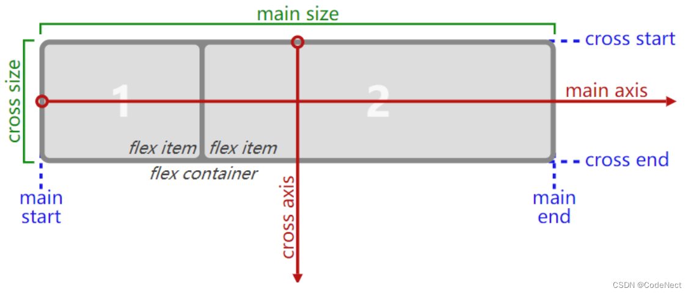
二、flex 相关属性
属性分为两类：
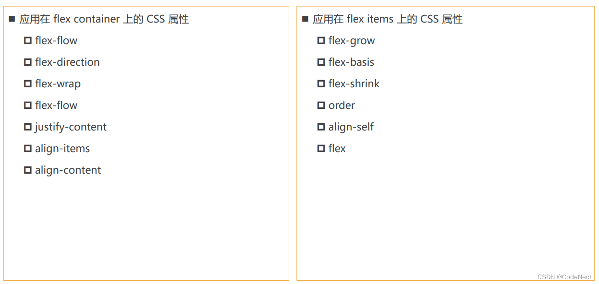
1. flex container 中的属性
1.1 flex-direction：item 的排布方向
flex items 默认都是沿着 main axis（主轴）从 main start 开始往 main end 方向排布
flex-direction 决定了 main axis 的方向，有 4 个取值：
- row（默认值）
- row-reverse
- column
- column-reverse
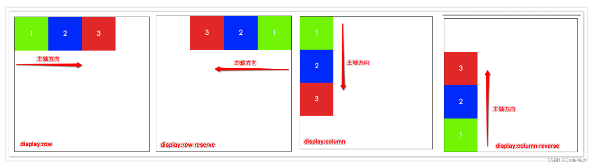
1.2 flex-wrap：排布是否换行
flex-wrap 决定了 flex container 是单行还是多行：
- nowrap（默认）：单行
- wrap：多行
- wrap-reverse：多行（对比 wrap，cross start 与 cross end 相反）
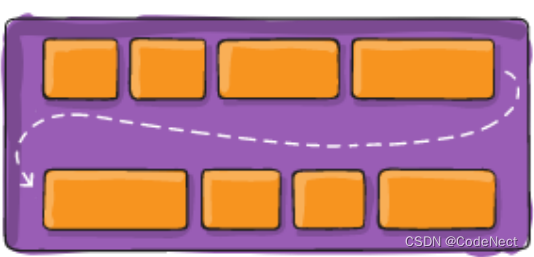
注意：
flex-wrap 取默认值时，若一行放不下所有的item元素，则会等比例压缩每个item的宽度，不会换行
1.3 flex-flow：属性的合并写法
flex-flow 属性是 flex-direction 和 flex-wrap 的简写，顺序任何
flex-flow: row-reverse wrap-reverse1.4 justify-content：item 的水平对齐方式
justify-content 决定了 flex items 在 main axis 上的对齐方式：
- flex-start（默认值）：与 main start 对齐
- flex-end：与 main end 对齐
- center：居中对齐
- space-between：
- flex items 之间的距离相等
- 与 main start、main end两端对齐
- space-around：
- flex items 之间的距离相等
- flex items 与 main start、main end 之间的距离是 flex items 之间距离的一半
- space-evenly：
- flex items 之间的距离相等
- flex items 与 main start、main end 之间的距离等于 flex items 之间的距离
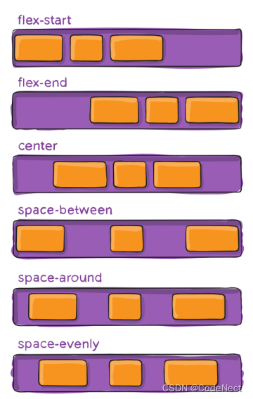
1.5 align-item：item 的垂直对齐方式
align-items 决定了 flex items 在 cross axis 上的对齐方式：
- normal：在弹性布局中，效果和stretch一样
- flex-start：与 cross start 对齐
- flex-end：与 cross end 对齐
- center：居中对齐
- stretch：当 flex items 在 cross axis 方向的 size 为 auto 时（未定义高度），会自动拉伸至填充 flex container
- baseline：与文字的基准线对齐
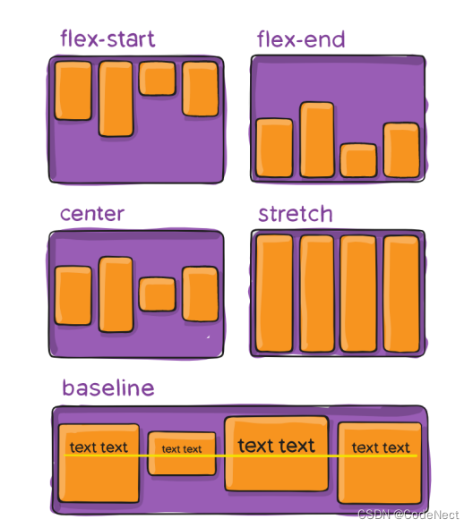
1.6 align-content：多行 item 的垂直对齐方式
align-content 决定了多行 flex items 在 cross axis 上的对齐方式：
- stretch（默认值）：与 align-items 的 stretch 类似
- flex-start：与 cross start 对齐
- flex-end：与 cross end 对齐
- center：居中对齐
- space-between：
- flex items 之间的距离相等
- 与 cross start、cross end两端对齐
- space-around：
- flex items 之间的距离相等
- flex items 与 cross start、cross end 之间的距离是 flex items 之间距离的一半
- space-evenly：
- flex items 之间的距离相等
- flex items 与 cross start、cross end 之间的距离等于 flex items 之间的距离
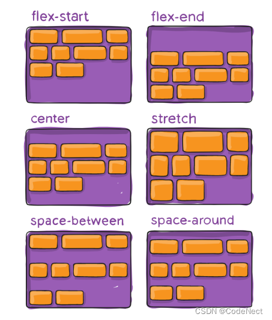
2. flex-item 中的属性
2.1 order：item 的排布顺序
order 决定了 flex items 的排布顺序：
- 可以设置任意整数（正整数、负整数、0），值越小就越排在前面
- 默认值是 0
2.2 align-self：覆盖 align-items 设置的垂直对齐方式
通过 align-self 覆盖 flex container 设置的 align-items：
- auto（默认值）：遵从 flex container 的 align-items 设置
- stretch、flex-start、flex-end、center、baseline，效果跟 align-items 一致
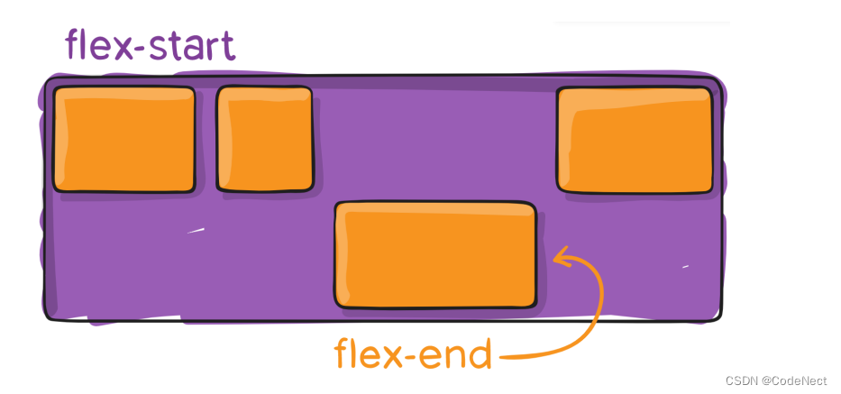
2.3 flex-grow：item 如何拉伸
flex-grow 决定了 flex items 如何扩展(拉伸/成长) ：
- 可以设置任意非负数字（正小数、正整数、0），默认值是 0
- 当 flex container 在 main axis 方向上有剩余 size 时，flex-grow 属性才会有效
注意：
- 如果所有 flex items 的 flex-grow 总和 sum 超过 1，每个 flex item 扩展的 size =
flex container的剩余size * (flex-grow / sum) - items 扩展后的最终 size 不能超过 max-width\max-height
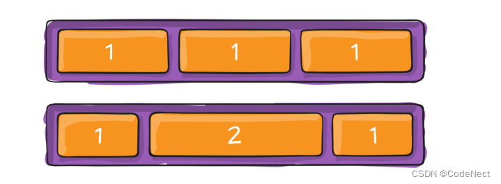
2.4 flex-shrink：item 如何收缩
flex-shrink 决定了 flex items 如何收缩(缩小)：
- 可以设置任意非负数字（正小数、正整数、0），默认值是 1
- 当 flex items 在 main axis 方向上超过了 flex container 的 size，flex-shrink 属性才会有效
注意：
- 如果所有 flex items 的 flex-shrink 总和超过 1，每个 flex item 收缩的 size =
items超出flex container的size * (收缩比例 / 所有flex items的收缩比例之和) - flex items 收缩后的最终 size 不能小于 min-width\min-height
2.5 flex-basis：设置 items 的 base size
flex-basis 用来设置 flex items 在 main axis 方向上的 base size：
- auto（默认值）、具体的宽度数值（100px）
- 若item中某个英文单词超出flex-basis宽度（中文不会出现此种情况），可以自动显示完全，若设置的是width则不可
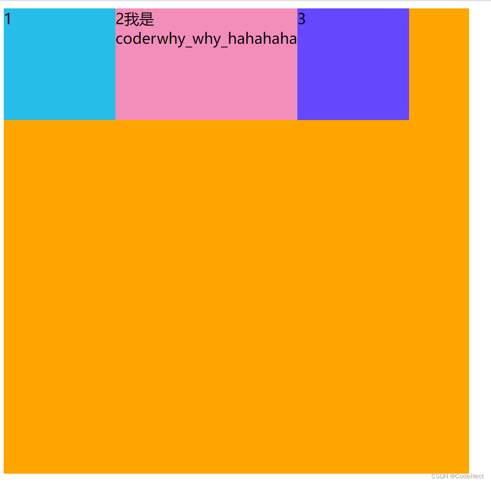
决定 flex items 最终 base size 的因素，从优先级高到低：
- max-width\max-height\min-width\min-height
- flex-basis
- width\height
- 内容本身的 size
2.6 flex 属性：属性的合并写法
flex 是 flex-grow || flex-shrink || flex-basis 的简写，flex 属性可以指定1个、2个或3个值。
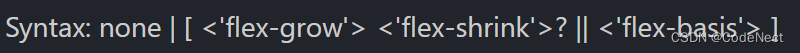
单值：
- 一个无单位数(number): 它会被当作 flex-grow 的值。
- 一个有效的宽度(width)值: 它会被当作 flex-basis 的值。
- 关键字none，auto或initial
双值：
- 第一个值必须为一个无单位数，并且它会被当作 flex-grow 的值
- 第二个值必须为以下之一：
- 一个无单位数：它会被当作 flex-shrink 的值
- 一个有效的宽度值: 它会被当作 flex-basis 的值
三值：
- 第一个值必须为一个无单位数，并且它会被当作 flex-grow 的值。
- 第二个值必须为一个无单位数，并且它会被当作 flex-shrink 的值。
- 第三个值必须为一个有效的宽度值， 并且它会被当作 flex-basis 的值
三、一个布局思考
在日常应用布局中，经常会出现item个数未知的情况。此时布局会出现下列情况：
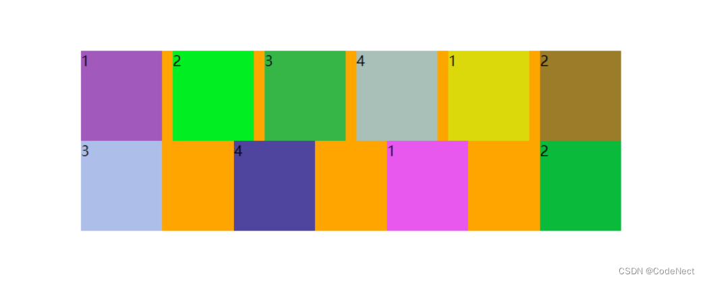
<!DOCTYPE html>
<html lang="en">
<head>
<meta charset="UTF-8" />
<meta http-equiv="X-UA-Compatible" content="IE=edge" />
<meta name="viewport" content="width=device-width, initial-scale=1.0" />
<title>Document</title>
<style>
.container {
width: 500px;
background-color: orange;
display: flex;
flex-wrap: wrap;
justify-content: space-between;
}
.item {
width: 110px;
height: 140px;
}
.container > i {
/* 只能设置宽度，不能设置高度，这样i的数量超出时也不会影响布局 */
width: 110px;
}
</style>
</head>
<body>
<div class="container">
<div class="item item1">1</div>
<div class="item item2">2</div>
<div class="item item3">3</div>
<div class="item item1">1</div>
<div class="item item2">2</div>
<div class="item item3">3</div>
<div class="item item1">1</div>
<div class="item item2">2</div>
<div class="item item3">3</div>
<div class="item item3">3</div>
<div class="item item3">3</div>
<!-- 添加i的个数是列数减-2 -->
<i></i><i></i>
</div>
<script src="./js/itemRandomColor.js"></script>
</body>
</html>item 多出1个的时候，布局仍是正常的；只有item大于等于2个时，才会出现分散的分布，需要i进行补齐。因此添加i的个数是列数减-2
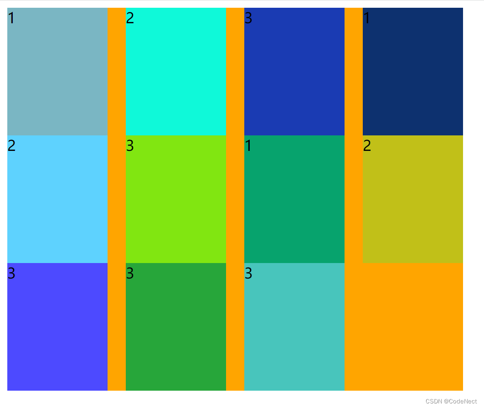